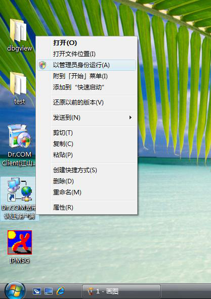
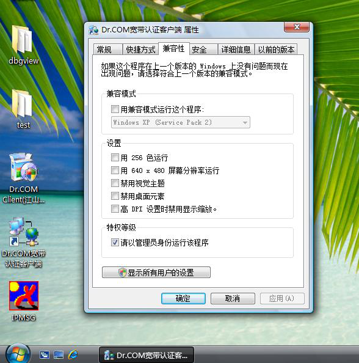
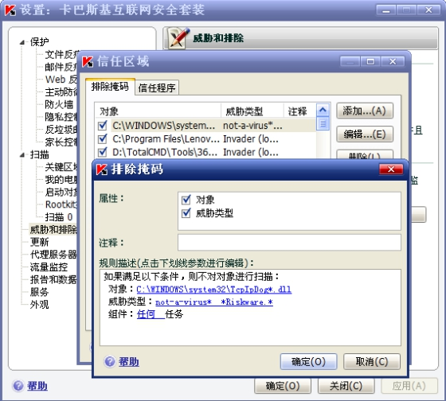
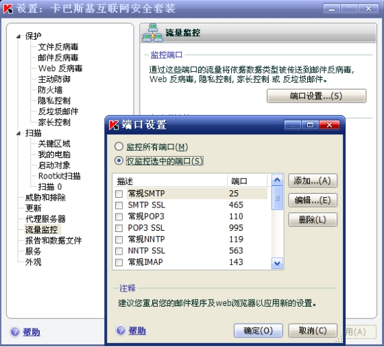
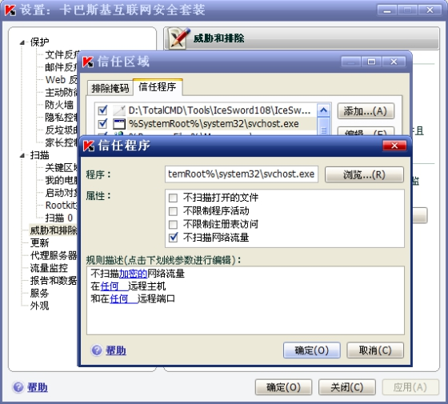
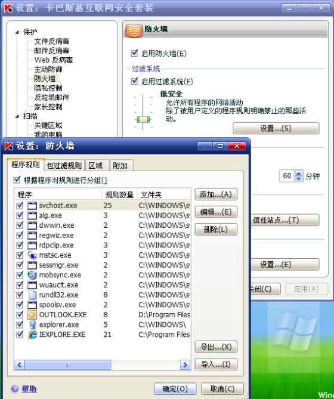

Search
Find out if your question is answered here
*Dr.COM客户端常见问题解决方法*
| 输入操作 | 故障描述 | 故障原因 |
|---|---|---|
| *登陆客户端* | 显示“登陆超时失败”或“端口被占用” | 1用户电脑开启了个人防火墙，包括XP操作系统的防火墙，将客户端所用的UDP 61440端口屏蔽了，*可关闭防火墙或在防火墙内设置允许UDP 61440端口通过的策略来解决;*2 如果客户端是属于防代理客户端，请检查客户端软件安装目录底下是否存在TCPIPDOG.DLL文件，*若文件已经不存在，请重新安装客户端；*3是因为客户端的注册表文件与KV2004的注册表文件冲突,造成端口冲突，*需要升级到新版本的客户端，（3.07**）*****以上客户端版本已解决该问题；*4 驱逐舰，安全卫士360，卡巴斯基，国外的一些防木马软件等有可能误报我们的客户端为木马或者病毒，把TCPIPDOG.DLL删除；*解决办法****需要重新安装客户端软件； |
| 没有开防火墙，但每次登陆均显示“登陆超时失败” | 1 用户电脑与接入服务器无法通讯，现象为无法ping通接入服务器地址，*请用户检查网络连接与网络设置*。2 内网中了ARP欺骗病毒，也会导致登陆不成功，*解决方法：除了清除内网的ARP病毒外，还可以升级到3.39版本客户端（实现登陆成功后自动绑定网关MAC地址），来解决；* | |
| 客户端正确输入帐号和密码后，登陆时出现提示code（21），不能正常上网；或者登陆客户端时候“提示客户端需要升级”， 不能正常上网 | 1、因为(code21)在我方客户端内部代码信息提示为: ”防代理功能失效,需要升级客户端软件!” , 如果存在部分用户恶意破解客户端软件,或者使用破解3.07以下版本的方法来破解现有客户端的话,就会引起该故障；2、其他软件无意中把我们客户端所写的注册表破坏,原理同上,目前我方测试部正在尽可能地收集更多的用户信息,以确认问题的根源；3、在客户端首次安装后,第一次运行或者用户手工修改了网络属性(IP 掩码,网关,DNS等) 的时候，我方客户端都会提示需要重启电脑;如果用户没有重启电脑,也将有类似的现状出现；4、另外部分用户使用的客户端版本过低(2.97以下等等),有部分运营商做了强制升级方案的,也会报code(21)故障,该故障是正常现象,可以建议用户和运营商联系取得客户端升级安装包重新安装解决;备注:确认用户的客户端版本是否是防代理版本的方法是检查用户的客户端安装目录底下是否有TcpIpDog.dll文件存在。*建议解决方法：**先卸载客户端和卸载网卡驱动或者tcp ip协议，然后重装网卡驱动或者协议,再重新安装客户端即可解决；* | |
| *登陆免**IP**客户端**快速点击客户端的登陆注销* | NT4.0用户登陆客户端提示“ishare_user错误” | 客户端程序调用的NT系统某些dll文件版本不匹配，建议用户升级win2000下后再重新安装客户端使用。 |
| *使用客户端* | 客户端登录认证成功，但打不开网页 | 1 检查登陆使用的帐号是否属于防代理策略类型，； 2 杀毒软件的一项设置禁止了客户端连接网络。在杀毒软件是“Norton internet security”,其中的一项叫“internet连接安全”的选项勾选就无法使用客户端上网，如果去掉该选项，上网一切正常，瑞星杀毒软件要把注册表实时监控去除；3需暂时去掉杀毒软件的网页监控功能； |
| 在浩方平台进入CS的时侯会出现C++DEBUG的提示错误而导致无法进行游戏 | 客户端本身存在的缺陷,已修正 | |
| 有时会出现”登陆超时”或者”帐号密码错误” | 如果客户端是基于RADIUS或PPPOE认证的话,出现这种情况属于正常,因为两种的认证方式在注销时有一定的延时,所以会导致”出现登陆超时”或者”帐号密码错误”如果是基于2033/2133认证的话则不会出现这种错误. | |
| 1.很多的网站不能打开,实际能够打开.2.会出现使用不到一个小时就自动掉线3.客户端登陆成功后不能自动隐藏 | 客户端本身存在的缺陷,需升级最新版客户端解决。 客户端本身存在的缺陷, 需升级最新版客户端解决。 如果客户端有登陆重定向设置,是不会自动隐藏的. | |
| 系统信息有“IP地址过多”的提示，然后自动注销 | 旧版本客户端有限制多IP方式的防代理功能，可通过升级最新版客户端解决。 | |
| *使用客户端登陆上网进行**KV2004**的升级* | 马上提示端口被占用,不能登陆上网. | 是因为客户端的注册表文件与KV2004的注册表文件冲突,造成端口冲突. |
| *使用客户端登陆进行**MSN**视频连接* | 有时可以连接有时又不可以连接 | 同网段的两台电脑一定是经过msn服务器的中转作视频连接。不同网段的两台电脑可通过msn服务器中转或点对点方式进行视频连接 |
| *安装卡巴斯基杀毒软件后，登陆成功，但打不开网页* | *登陆成功，但打不开网页* | 卡巴里面有个设置－服务－网络设置－端口设置, 里面把一些常用的端口，比如HTTP,SMTP,POP，IMAP等端口选择,去掉这些端口监控后，问题解决 |
| *在**windows98**上使用**Dr.COM**客户端登录上网* | 一点击登录即提示非法操作。 | 原因是联系运营商升级最新版2.98以上版本客户端。 |
*VISTA下客户端常见问题的解决方式*
1. *在Vista系统的安装:*
3.45版本以前的客户端安装文件,在Vista系统上面是安装不了的,如果有客户要求要安装包的话需要重新打包,但是如果不用安装包,直接把原来软件安装目录复制到Vista操作系统目录也可以正常使用,具体使用请参考2的说明.
2. *新旧版本在Vista的使用*
n 新版本的3.45以上的客户端,安装完后第一次运行,需要在快捷方式上面点右键,选择以管理员身份运行,如下图1所示,按照提示操作就可以正常使用.

图1
n 旧版本的客户端要在客户端登陆的快捷方式上点右键,选择属性,在里面的兼容性里面选中”请以管理员身份运行该程序”,如图2所示,按照提示操作就可以正常使用:

图2
*3. 关于VASTA下客户端总是提示端口占用的问题的解决办法:*
【打开注册表找到下列键值
\HKEY_LOCAL_MACHINE\SYSTEM\CurrentControlSet\Services\WinSock2\DrcomPack
etCapture 下的键值1001、1002这样的值是否是有乱码，如有乱码请先删除键值
中的乱码部分，然后试看能否登录，否则，可以修改用下面的数值数据替换当前错
误的数值数据.
%SystemRoot%\system32\mswsock.dll】
*4.部分笔记本和台式机使用安装虚拟网卡驱动进行防代理的客户端,在运行客户端后系统出现死机现象,基本上这些有问题的电脑网卡芯片都是使用Broadcom公司的芯片:*
现象描述：拨号上网后，直接拔掉网线后系统死机，鼠标图标有时无任何响应，必须强行关机重新启动系统，恢复正常。在其他办公环境也有可能会出现类似故障现象。
现象分析：目前部分联想DELL笔记本电脑机型采用了Broadcom厂商网卡芯片型号，其较早版本网卡驱动的bug可能会导致上述故障现象。
解决方案：建议尝试升级上表所列机型对应的更新版本网卡驱动程序；此解决方案只针对有相应网卡驱动引起的此类故障有效!
说明：
- 附件1：“Broadcom 440x 10/100 Integrated Controller”XP（32bit）下网卡驱动；
附件2：“Broadcom 440x 10/100 Integrated Controller”Vista（32bit）下网卡驱动；
附件3：“Broadcom NetLink? Gigabit Ethernet” XP（32bit）下网卡驱动；
附件4：“Broadcom NetLink? Gigabit Ethernet” Vista（32bit）下网卡驱动；
附件5： 网卡具体升级方法参考示例 (Broadcom 4401 XP)。
附加文档1：“Broadcom 440x 10&100 Integrated Controller”XP（32bit）下网卡驱动.exe
附加文档2：“Broadcom 440x 10&100 Integrated Controller”Vista（32bit）下网卡驱动.exe
附加文档3：“Broadcom NetLink_ Gigabit Ethernet” XP（32bit）下网卡驱动.exe
附加文档4：“Broadcom NetLink_ Gigabit Ethernet” Vista（32bit）下网卡驱动.exe
附加文档5：网卡驱动安装方法示例(Broadcom 4401 XP).exe
另外也可以通过升级IE浏览器到7.0版本和用其他浏览器(推荐用Firefox)来观察故障现象是否有减少.
根据我们研发工程师分析此问题是由于Broadcom网卡驱动程序本身存在bug导致，我们暂时没有办法解决。我们会继续寻找解放方法的。目前我们只能暂时提供从网上搜集的解决方法，但不一定能解决问题,最终的解决办法还有待进一步核实和验证；
*防火墙与封装tcpipdog.dll兼容性解决方法*
各种杀毒软件套装及防火墙可能与dll封装防代理模块tcpipdog.dll直接存在兼容性问题，这会导致不能上网，或者登陆客户端是提示端口占用。
现将解决方法归纳如下：
*注意：*
请按照顺序执行解决问题，当前一种解决方法无效不能解决问题时，再试下一种解决方法。
*1.**将**tcpipdog.dll**模块加入防火墙软件的信任区域；*
根据防火墙软件的不同，有些可能需要使用完整路径，这时需要加入如下文件到防火墙的信任区域：
X:\WINDOWS\system32\tcpipdog0.dll
X:\WINDOWS\system32\tcpipdogR0.dll
X:\WINDOWS\system32\tcpipdog1.dll
X:\WINDOWS\system32\tcpipdogR1.dll
X:\WINDOWS\system32\tcpipdog2.dll
X:\WINDOWS\system32\tcpipdogR2.dll
其中X为系统盘；
如果防火墙软件支持通配符，可直接加入X:\WINDOWS\system32\tcpipdog*.dll到信任区域；
*卡巴斯基中设置如下：*
在****“设置”*的*“威胁和排除”*页面，选择*“信任区域”****按钮；
在弹出的窗口中选中****“排除掩码”****标签页；
在弹出的添加窗口记得选中****“对象”*和*“威胁类型”****；
在下面列表中的****对象***中输入 “X:\WINDOWS\system32\tcpipdog.dll”；
****威胁类型***输入 “not-a-virus *Riskware.”或者直接输入“”；
****组件****选中任何任务；
其中输入的内容不包含双引号；
如下图：

设置了这个基本可以解决不能上网和端口占用问题；如不能解决，再试试以下的解决方法。
*2.**禁止防火墙的浏览监控*
有些防火墙的流量监控功能也会导致封装后不能上网，如卡巴斯基套装；这时只要禁止防火墙的流量监控功能即可。
*在卡巴斯基中设置如下：*
在****“设置”*的*“流量监控”*页面选择*“端口设置”****按钮；
然后在窗口中选择****“仅监控选中的端口”****，然后在下面的列表中取消选中所有端口；
然后保存应用设置即可；

*3.**防火墙控制了系统程序**svchost.exe**和**services.exe**程序的网络访问*
有些防火墙控制了系统程序svchost.exe和services.exe程序的网络访问，可能会导致不能访问网络，解决方法是将这两个程序加入防火墙的信任区域。
*卡巴斯基中设置如下：*
在****“设置”*的*“威胁和排除”*页面，选择*“信任区域”****按钮；
在弹出的窗口中选中****“信任程序”*标签页；然后点击*“添加”****按钮添加两个程序到信任区域；
在弹出的添加窗口记得选中****“不扫描网络流量”****；如下图：

如果还解决不了问题，将系统程序svchost.exe和services.exe的防火墙规则从规则列表中移除；
*卡巴斯基中设置如下：*
在****“保护”*的*“防火墙”*页面，点击*“启用过滤系统”*区域的*“设置”****按钮；
在弹出窗口选中****“程序规则”****页面，在列表中取消svchost.exe和services.exe的规则。

*802.1X客户端登录故障现象与分析*
| *客户端登录故障现象* | *可能原因* | *解决方法* |
|---|---|---|
| 客户端登录时一直停留在寻找服务器，最后超时失败 | 电脑使用是的NVIDIA芯片组主板，比较新型的此主板在板载网卡上集成有防火墙功能，并会在安装驱动时，安装NVIDIA自己的防火墙，此防火墙除了常规拦截应用程序和拦截外来访问选项外，还有很多其他拦截各种外出数据包选项 | 此防火墙拦截数据包选项太多，如果不是特别需要此防火墙的功能，可以在添加删除程序里把此防火墙卸载 |
| 系统安装太多安全防护软件（MCAFEE、木马防火墙、360安全卫士实时防护、AVG小红帽杀毒软件等同时装上），造成软件冲突 | 把这些防护类软件删除，但仍有部分电脑即使删除这些安全类软件也已经系统紊乱，只能重装 | |
| 连接的交换机端口未开802.1x验证 | 检查交换机端口设置 | |
| 网卡驱动不适合，造成WINPCAP不能正确识别到网卡，目前发现都出现在几块使用Realtek8139网卡的电脑上，XP自动识别此网卡，装上XP自带的驱动后，WINPCAP只能认成NDIS5.0驱动的网卡 | 用主板带的光盘安装网卡驱动，替换了XP自带的驱动，在客户端的“选择网卡”处能正确识别到网卡驱动即可 | |
| 客户端登录时一直停留在验证过程1，最后超时失败 | 802.1x交换机与RADIUS服务器通迅故障 | 查看接入交换机，在交换机上测试与RADIUS服务器连接情况，当时有一台交换机与上一层4506交换机通迅故障，使用show cdp neighbor命令都无法查看到另外连接的交换机，更换连接网口后故障解决 |
| 计费服务器中，未把此802.1x接入交换机IP加入 | 在计费服务器的RAIDUS服务列表中查看有否把此交换机IP加入 | |
| 客户端登录成功后，在读取用户属性阶段停留较长时间，然后自动注销 | DHCP服务器设置错误，此IP段网关设置不正确 | 当时查看交换机配置，正常，统计发现都是同一个VLAN同一个IP段的会自动注销，把交换机端口上的dot1x关闭，测试，发现此段IP通过DHCP获取后无网关，后查看DHCP服务器，此段IP的网关设置错误，设置成了广播地址，造成客户端DHCP获取IP后，无网关，就不能与计费服务器通迅 |
| 关于自动获取地址 | :对于802.1x认证,原理是先认证通过,然后分配ip地址,但是在这边,对于windows xp用户是这样的,对于windows server 2003,则可以先获取到地址,在认证通过.使用上都是正常的. |
校园里一般都是用的DHCP，电脑可自动获取IP地址，用Dr.com登录校园网，登录超时、联不上，很有可能是获取到的IP地址无效。解决方法：开始——运行——cmd——回车——ipconfig/release(在命令提示符的窗口里，释放掉当前的IP地址)——ipconfig/renew（重新获取IP地址），然后再重新登录客户端试试。